It's become tradition among the Cruftlabs and EC crowd to build rafts for the 4th of July, as a vantage point on the Charles provides by far the best view of the fireworks. Scott et. al. set the standard with the couchamaran in 2002. Other notable craft include McBean's sewer pipe in 2003 and crow's nest in 2004. Greddy and I built the cruftamaran in 2004.
This year, Scott decided that this year his boat would surpass all previous craft. The idea was to watch the fireworks from a floating car: quite an undertaking. The team centered around Scott, Karen, Amrys and myself, with lots of help from Juhi, Mar, Emily, John and others.
Amrys has the full story of the floating Bel Air, complete with meeting minutes, progress reports and links to the hundreds of pictures we took. This is a tour through the highlights of the project.
We decided to use an old American car as the donor vehicle because they have lots of space and have a separate frame for easy removal of the engine and drivetrain. In early June Scott spent $400 on a 1967 Chevy Bel Air and suddenly there was no turning back. We'd hoped for a convertible, but fixing this was a minor detail compared to the work that lay ahead. After being banned from all vehicle work outside Cruftlabs after the spectacle provided by the cruftwagon and John's LandCruiser, the plan was to work on the car in Mar's off-street parking spot.
The team got our first look at the car on Monday June 13th: it was just the right amount of a wreck. We had 3 weeks.
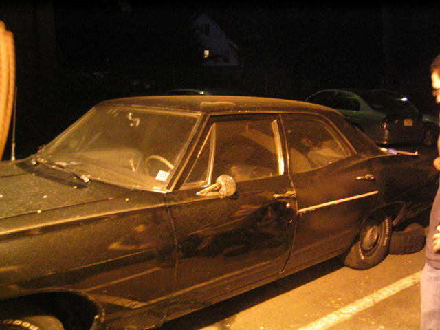
At our first planning meeting we decided on the general design we would use and came up with a schedule. The plan was to provide sufficient 'closed' bouyancy that the car could under no circumstances end up on the bottom of the Charles - a very embarassing and costly accident. This would be provided by oil drums and water bottles in the engine bay and drivetrain area, and closed-cell foam in pontoons to be constructed underneath the car. We would then make the passenger compartment watertight to keep the occupants dry and to add extra bouyancy. The first task was to remove the interior to give access to the body for welding.
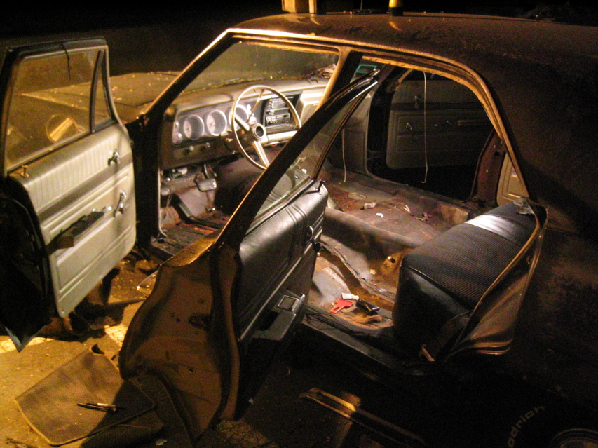
The following evening we continued to gut the interior. The car clearly hadn't been used for some time and most of the fabric inside was damp and slowly rotting. The seats were particularly disgusting, and nested in the foam we found several mice, both alive and dead. Once those were out, the smell inside was much more tollerable.
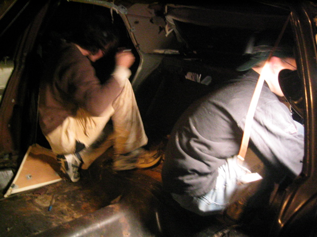
That evening we also made the first detailed inspection of the underside of the car. First to plan what was required to remove the body from the frame, and also to start to design the pontoons.
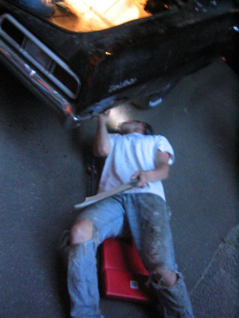
We also disconnected everything between the engine and body, ready for lifting the body from the frame. Pretty quick with a pair of bolt cutters.
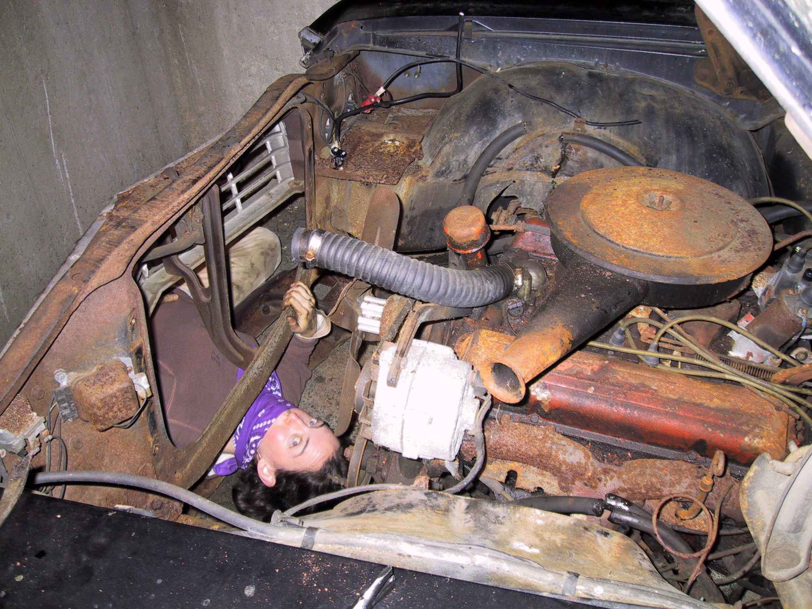
The slow process of removing the bolts holding the body to the frame continued in the rain.
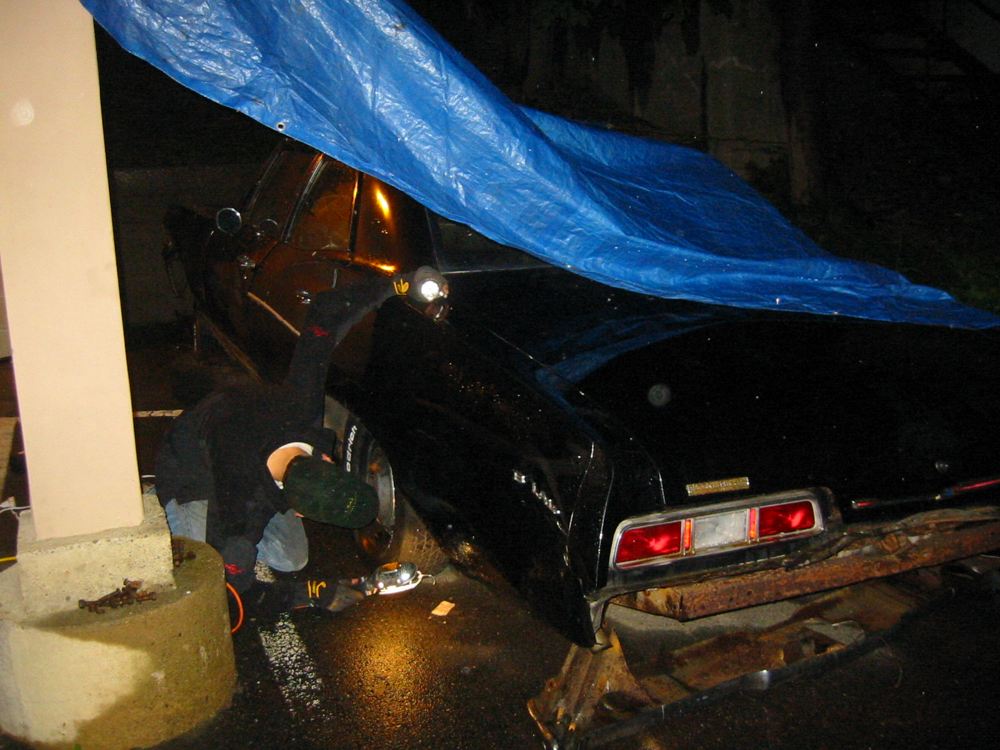
By the weekend we were still working to get the body separated from the frame.
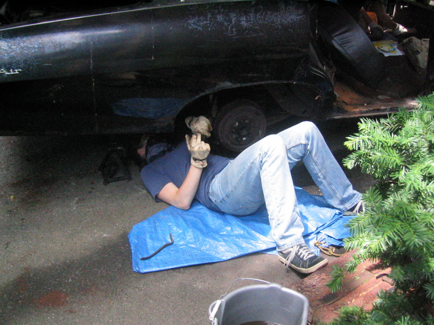
Once the bolts were out, we started the process of lifting the body from the frame: easy with a big crane, quite a challenge without. We began by jacking up the body and inserting wooden beams with which to lift.
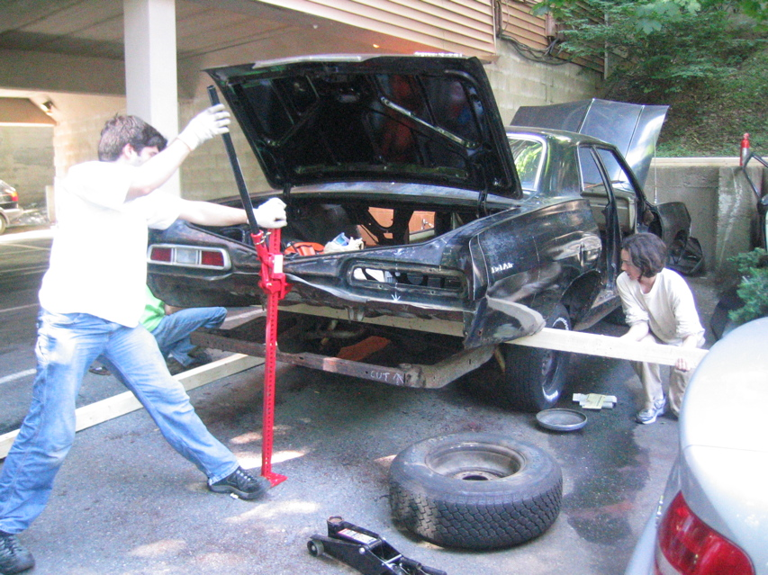
We lifted the beams one at a time and supported them on piles of tires. Unfortunately we didn't have enough tires to raise the body to clear the engine and the body was too heavy to carry manually, even with lots of people. Heated discussion on what to do followed.
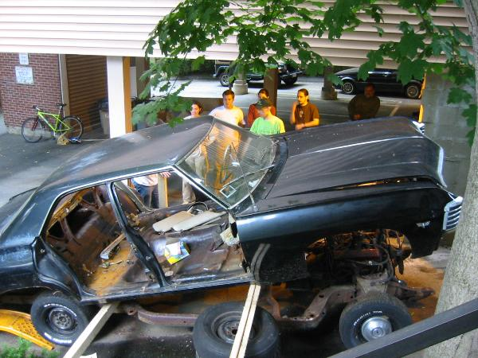
Fortunately, Vinnie, the guy we'd arranged to take away the frame, was an animal. With him single-handedly carrying most of the back end of the car, we had the body off in no time.
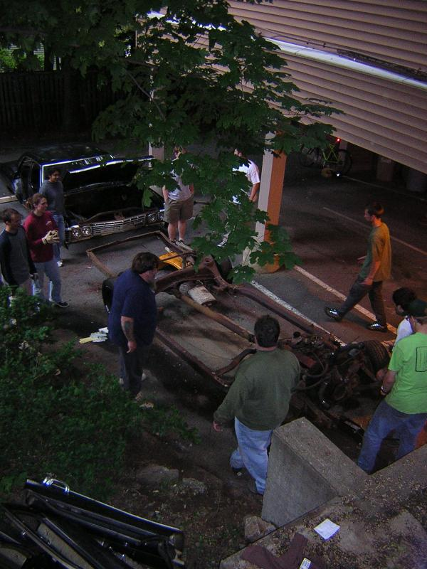
With the body off, we could now see exactly what needed doing to make it float. First we built a pair of giant saw-horses to support the body and to make work underneath more easy.
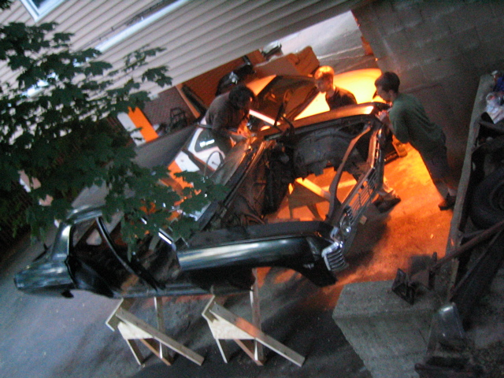
Progres on the main structure of the body and pontoons was waiting on a design and materials, so we set to work on the doors. The plan was to remove all the internal structure, as well as the window glass, to save weight.
The plan for the pontoons was to use angle iron to make two traingular prisms under the car. These would then be skinned with sheet steel and filled with enough foam to give about 1200lbs of bouyancy. On wednesday night we took detailed measurements of the underside of the car and finalized our design for the pontoons.
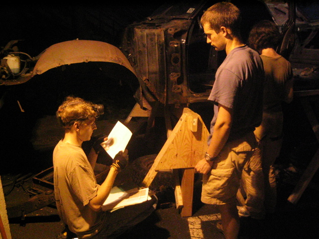
Meanwhile, the areas of the body that would have to be welded to make the passenger compartment watertight were identified, and grinding began.
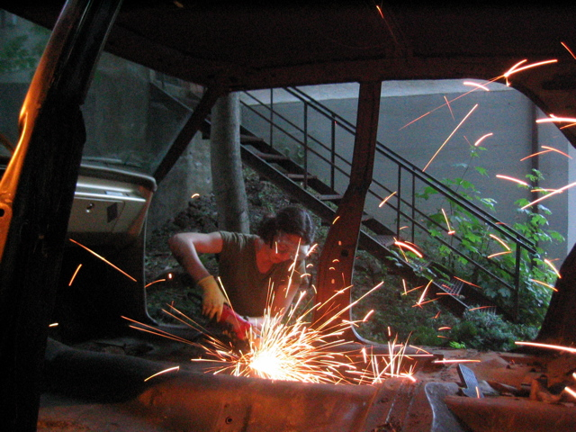
By now we'd aquired four EC bed frames as a source of angle iron. Back at the labs, we started to cut the required lengths for the pontoons.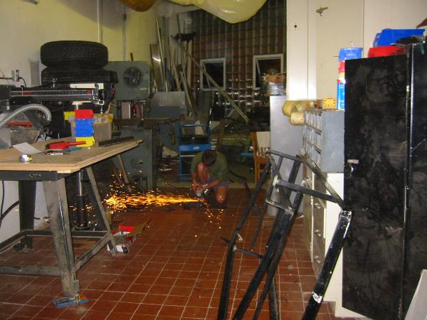
On Thursday night, grinding continued on site, and cutting at Cruftlabs.
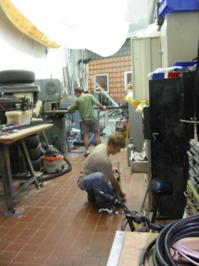
The plan for Friday was to weld the pontoon frames under the body; a major milestone. Unfortunatley, it was not to be. The last 10 days of work, particularly two evenings of grinding, had taken its toll on our neighbors. The English wasn't great, but the message of our eviction notice was clear.
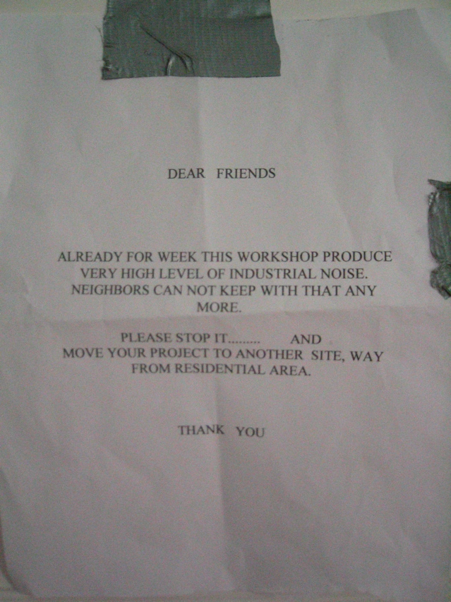
After a long discussion with Graciella, the spokeswoman for the residents, it became clear that there was no negotiation to be done. We met at Cruftlabs to discuss alternative work sites. Alex lifted the mood by pouring baking soda all all over Scott.
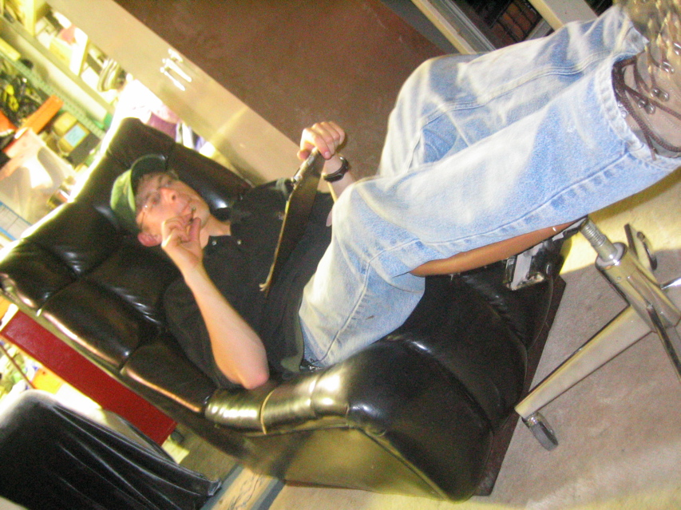
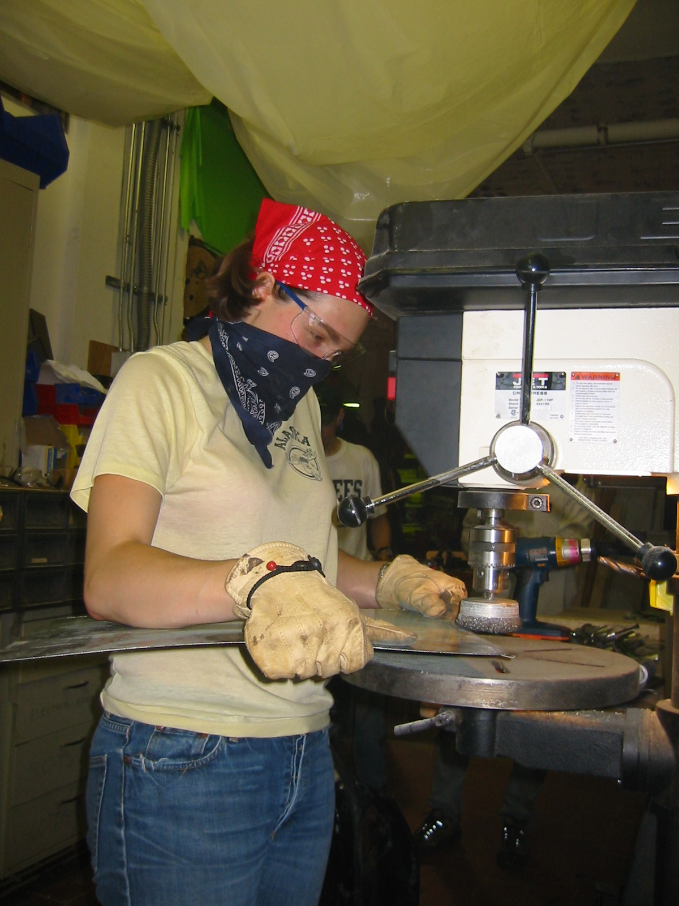
We still hadn't found a new worksite, but we decided to go ahead and weld the pontoon structure to the body. We couldn't afford the lost time, but more importantly, the body would be far easier to transport with the runners provided by the pontoon frames.
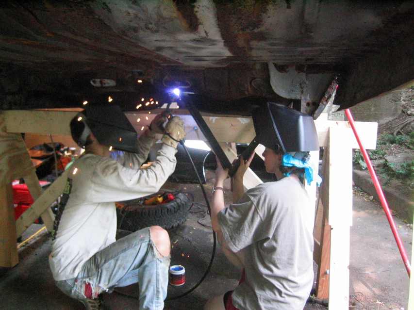
On Monday morning Karen and I cycled to Southie to ask a favor of Mr. Shaugnessy, of Shaughnessy and Ahern Co. Truckmen and Riggers. Ehren had rented a spot in one of Shaughnessy's lots as a work site for the wunderbus and we hoped to make a similar deal. We explained our situation to the receptionist and were taken directly to meet with the man himself. As we'd been told, Mr Shaughessy is a man who makes deals with a handshake and after hearing our story, declared it a worthy project and offered us warehouse space for the next week, for free. After being told stories about some of the huge objects his riggers had moved, we left his office with keys to one of his warehouses.
We moved to our new worksite that evening. We completed the pontoon frames and loaded the boat onto a flatbed trailer; quite an operation in itself.
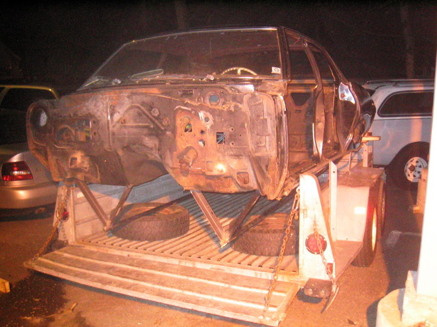
The cruftwagon was put to work doing what it does best, with the Bel Air's doors and seats in the back, and the front pannel and inner wings on the roof. The convoy to Southie was a sight to behold: the Scout towing a flatbed loaded with half a car, and the Cruftwagon with an extra grille and headlights on the roof. Limited by the trailer's poor handling and the Cruftwagon's new uni-speed tranmission, we chugged across Boston in the middle of the night at about 15mph.
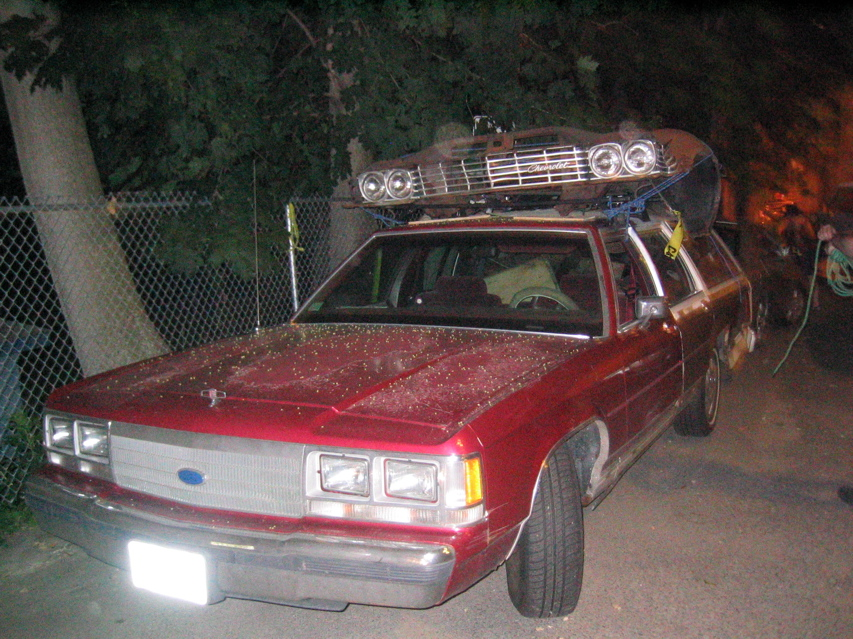
Shaugnessy's warehouse was huge and full of big toys. More importantly it was clean, dry and free of neighbors.
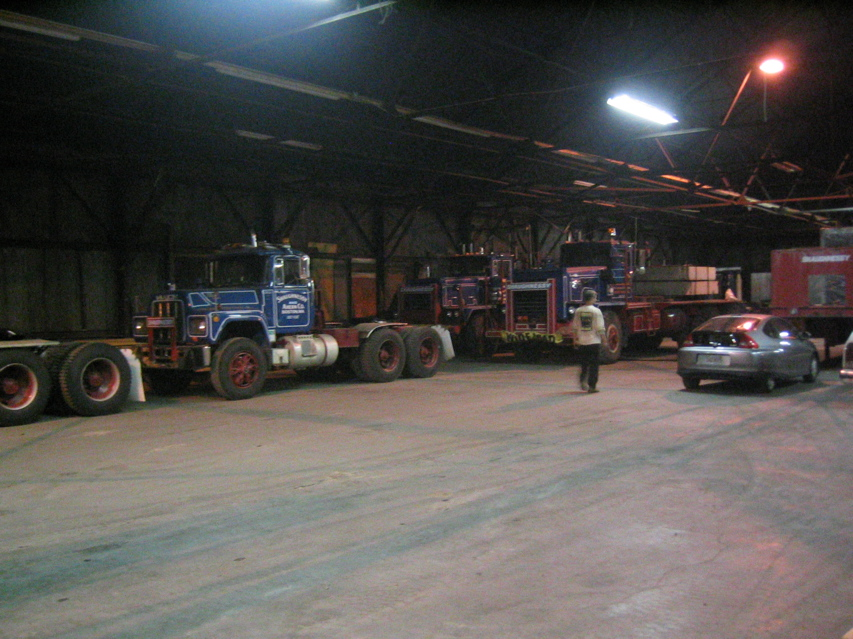
Once inside the warehouse we played giant Jenga to manoeuvre the Bel Air off the flatbed and into our spot.
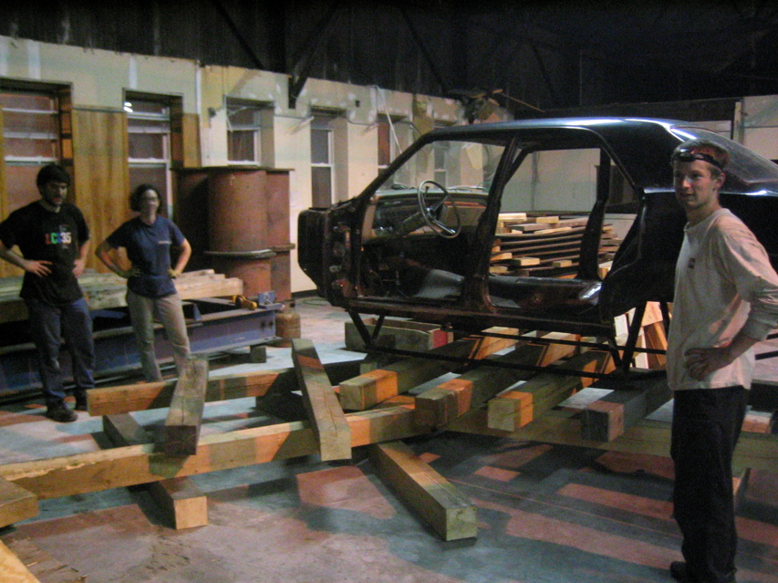
After an exhausting night's work, we headed to South Street Diner at about 3am.
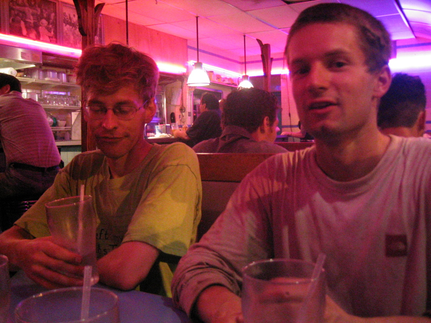
The eviction and move had put us well behind schedule. Work continued with preparation of the body for welding.
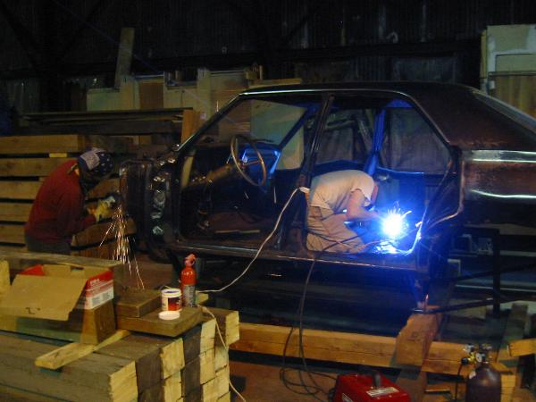
By Wednesday the welding of the body patches was well underway, and the box to waterproof the steering column was taking shape.
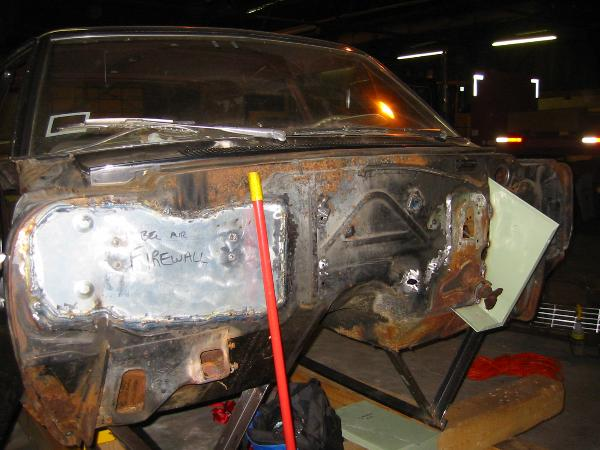
We'd now aquired much of our closed flotation: four 55 gallon oil drums and a pile of 5 gallon water bottles, which were sealed ready for use.
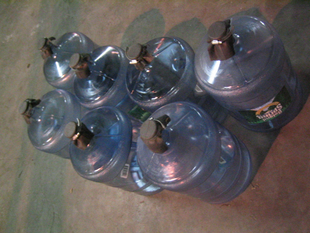
Welding continued on the footwells and the main seams across the floor.
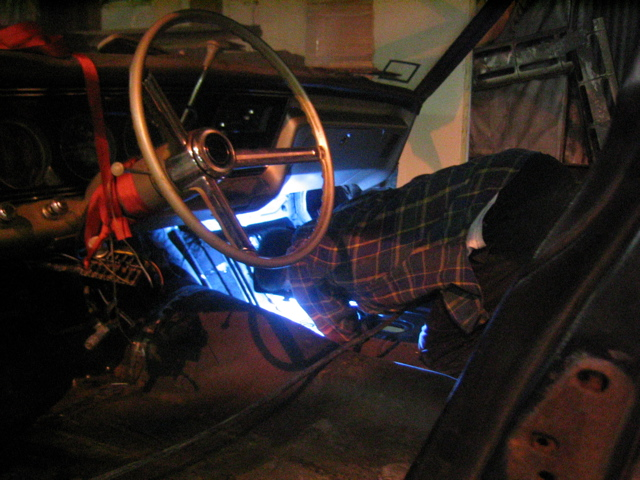
Sheet metal was sourced from spare APC rack cabinets and Friday saw a momentous occasion: the fitting of the first pontoon panel.
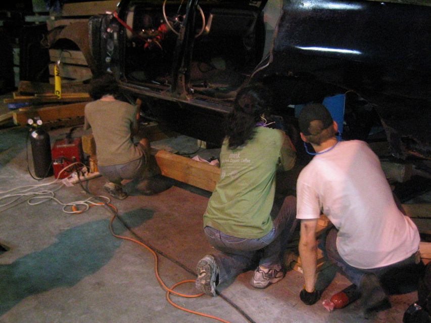
By Saturday July 2nd there was still a huge amount to be done. The details of what happened over the next 72 hours are all a bit of a blur. As Amrys put it "days and nights and actual dates no longer relevant. no summaries sent out due to fact that no one is doing anything except working on the boat (and occasionally, if there is a spare moment, eating and sleeping)".
The remaining pontoon panels were cut and welded in place.
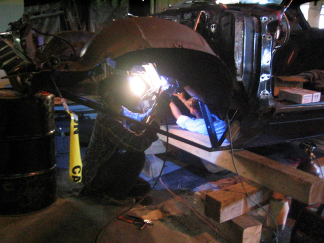
Scott machined an aluminum drum which bolted to the steering shaft to operate the rudders. Sadly the steering system was never completed due to lack of time. With the drum in place, the remainder of the steering box was welded up.
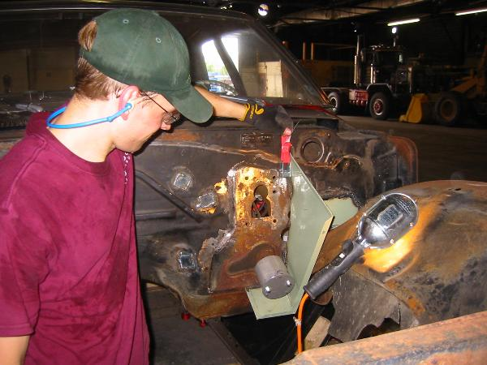
A major task for today was to finish waterproofing the doors. Welding the thin steel skins proved very difficult indeed, so we resorted to brazing. Karen and Juhi prepared the doors and inspected for leaks while Scott brazed.
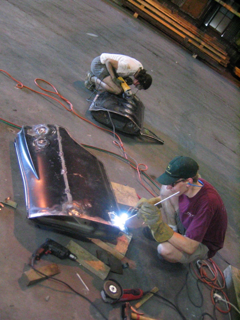
Working lights were essential to comply with boating regulations on the Charles, so Mar worked on re-wiring the body.
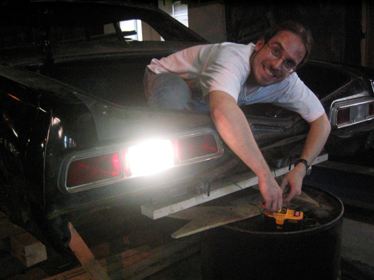
With the doors finally sealed and welded to the body, the car had the rigidity for the roof to be cut off.
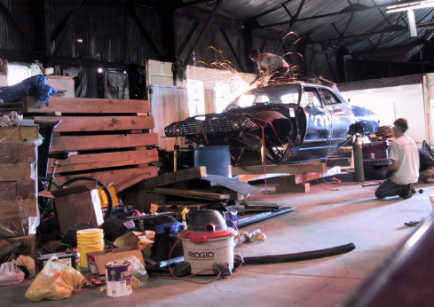
Scott cuts the remaining sections from around the rear windshield.
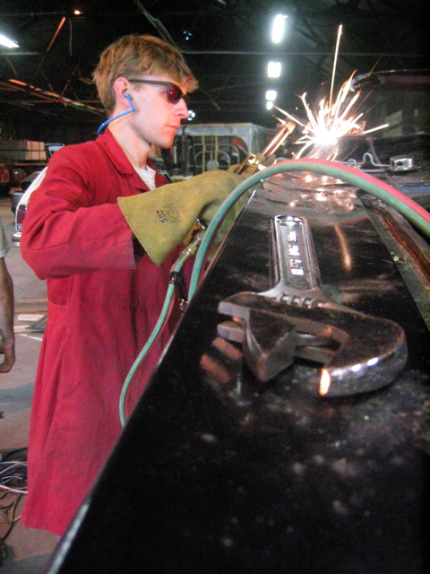
Meanwhile Jon and Emily have cleaned, deodorized, wrapped and covered the seats.
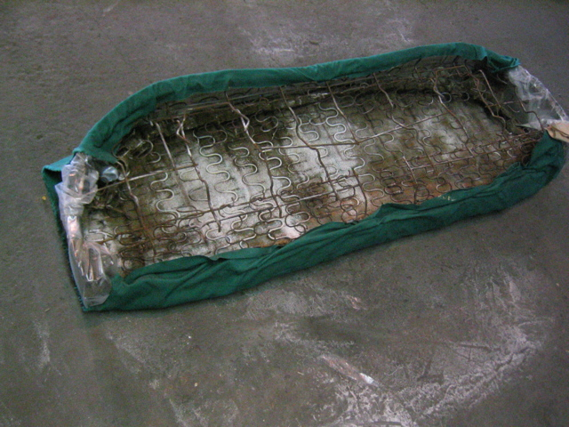
The removable body panels are painted.
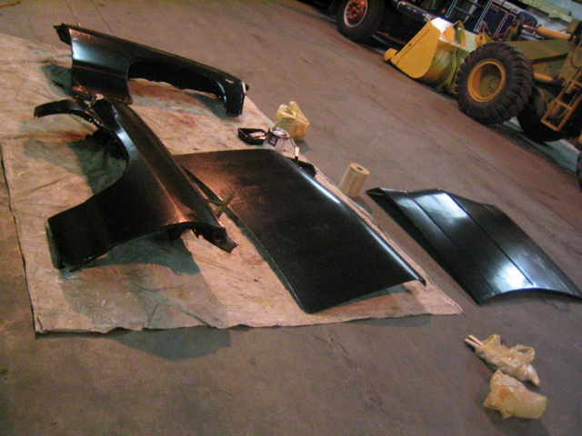
Kraft saves the day by providing another pair of welding hands and a huge bottle of CO2. Here he welds the support brackets for the rudders.
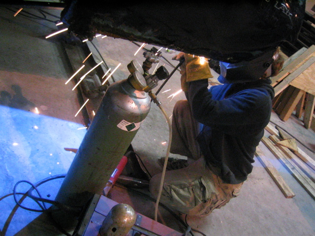
The bulk of the closed flotation in the engine compartment was provided by an oil drum. Meanwhile, the top of the windshield is cleaned up.
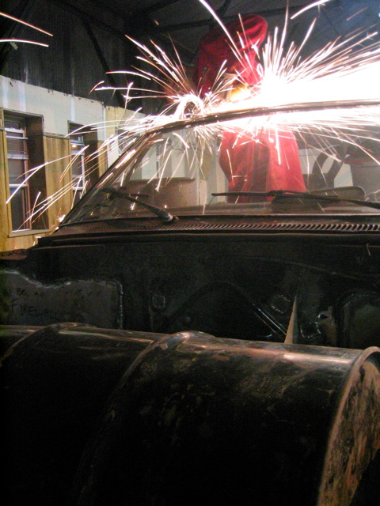
With the structure of the body complete, painting begins. At this stage, 2 oil drums are in place in the tunnel previously occupied by the rear axle.
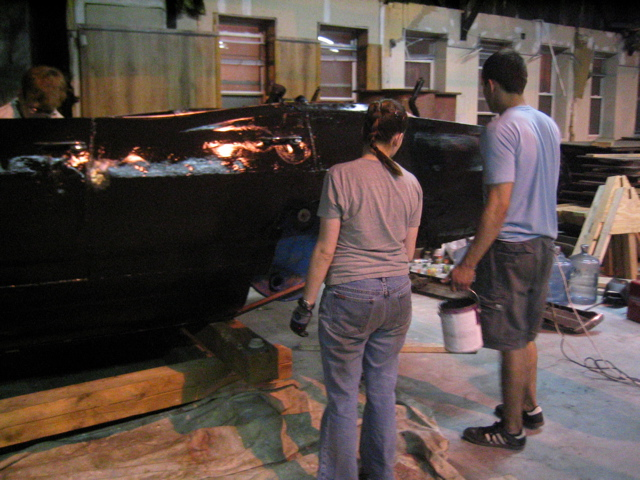
Late Sunday evening we tackeled the greatest unknown of the project; pouring the two-part expanding foam. "Mix vigorously for 45 seconds then pour." The first of many batches is poured into the pontoons through holes in the floor of the passeneger compartment.
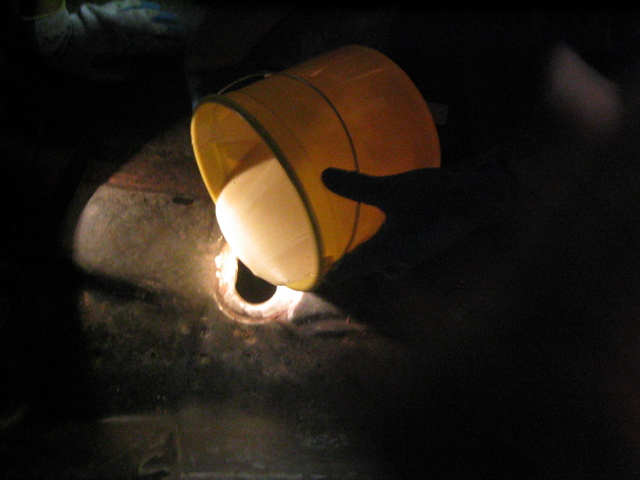
Foam pouring continued almost non-stop through the night. We used plastic bottles in the pontoons, trunk and engine compartment to stretch our foam dollar. The foam expanded enormously and set rock hard, which was great, but immediately after mixing it was far less viscous than we'd imagined. This meant that containing the foam while it expanded was a big problem. By the time foaming was complete we'd got through several buckets, hundreds of square feet of seran wrap, countless pairs of latex gloves and were all well and truly covered.
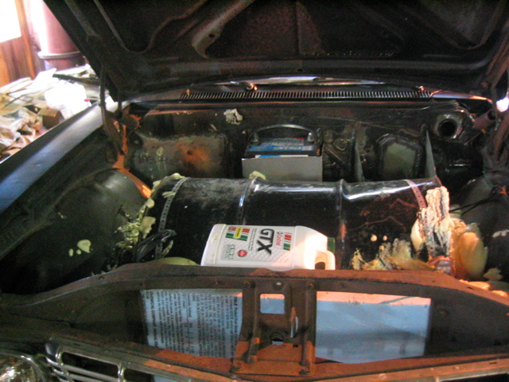
Once foaming was complete we covered all of the body joints with sealant. All of the major tasks were now done, but there seemed to be countless little things to complete. Here Scott delicately cuts holes through the firewall and doors to route the rudder cables, while Mar readies the fire extinguisher.

By mid afternoon we had to leave if we were to make it to the fireworks in time. The outer wings were bolted back on and the boat was loaded back onto a trailer. The last task was to weld towing eyes to the front of the pontoons, just in case we had dificulty getting the boat back out of the water.
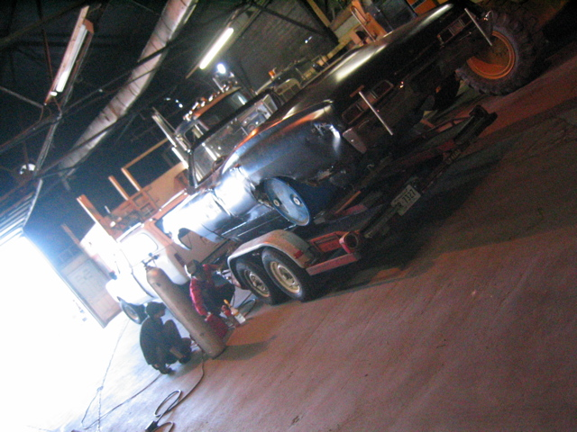
Disappointment at the dock. To sumarize ...
We search for another public boat ramp but have no luck, so have no choice but to head home. The Bel Air goes to Cruftlabs and we go to watch the fireworks from the river bank. Like all the normal people.
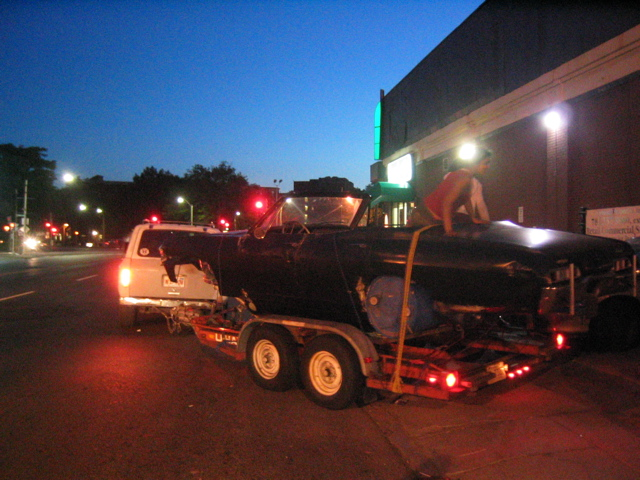
Cleanup at Southie. Immense depression.
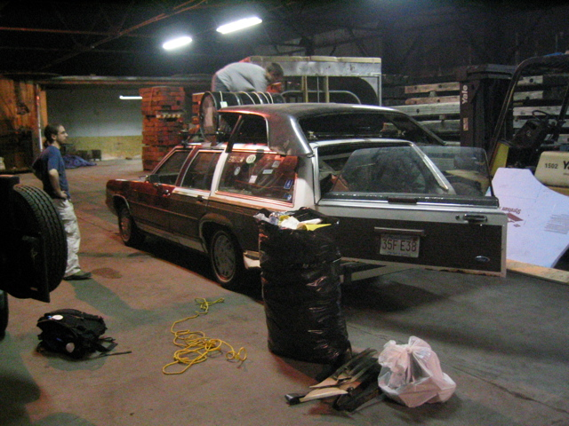
Depsite the disappointment on the 4th July, we were determined to float the Bel Air, if only to prove that it was indeed river-worthy and that our 3 weeks of hard work weren't all in vain. There were many aborted attempts at arranging a time to float the Bel Air, all complicated by the fact that the Bel Air was at Josh's land in Ossippee and renting a trailer from U-Haul is one of the most painful experience immaginable. Key to making the maiden voyage a reality was the purchase of our own trailer, which was then shipped to Ossippee.
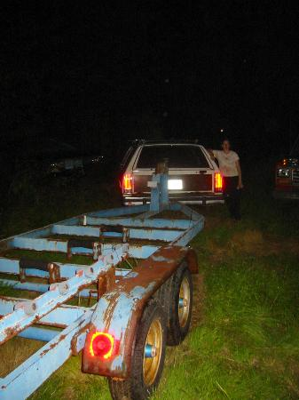
We eventually managed to get the Bel Air, trailer, Scout and people in the same place on July 31st. The first task was to get the Bel Air onto the trailer. Not easy.
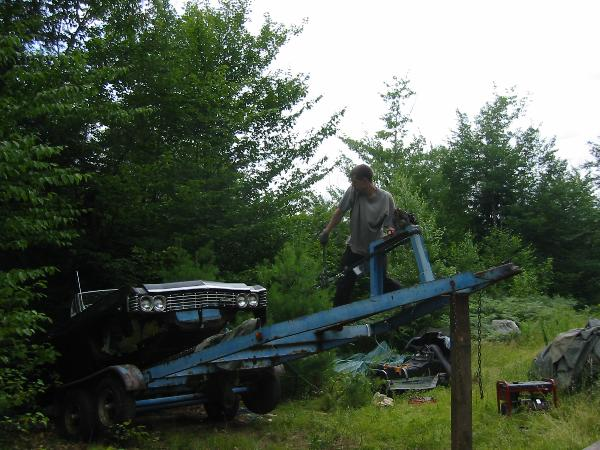
Scott and Karen plugged a final few leaks.
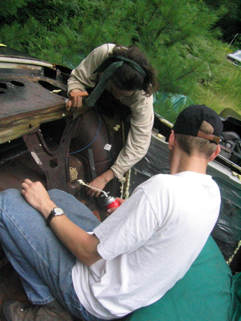
The boat and trailer are ready to go. Sadly, starting the Scout is a two-person, hour-long job.
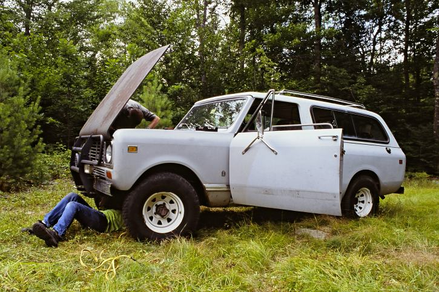
Finally, we're off.
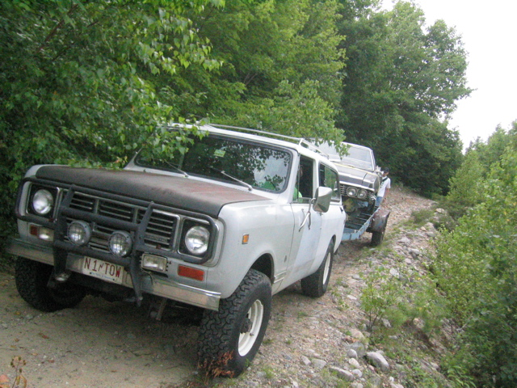
Unsurprisingly, the Bel Air is the center of attention at the boat ramp.
The moment of truth: in front of a crowd of onlookers the entry into the water goes perfectly. She floats!
Returning to the dock to fix a couple of minor leaks.

Josh waits to set out on our first proper voyage on the river.